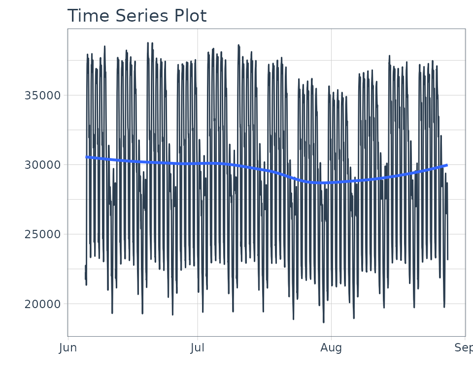
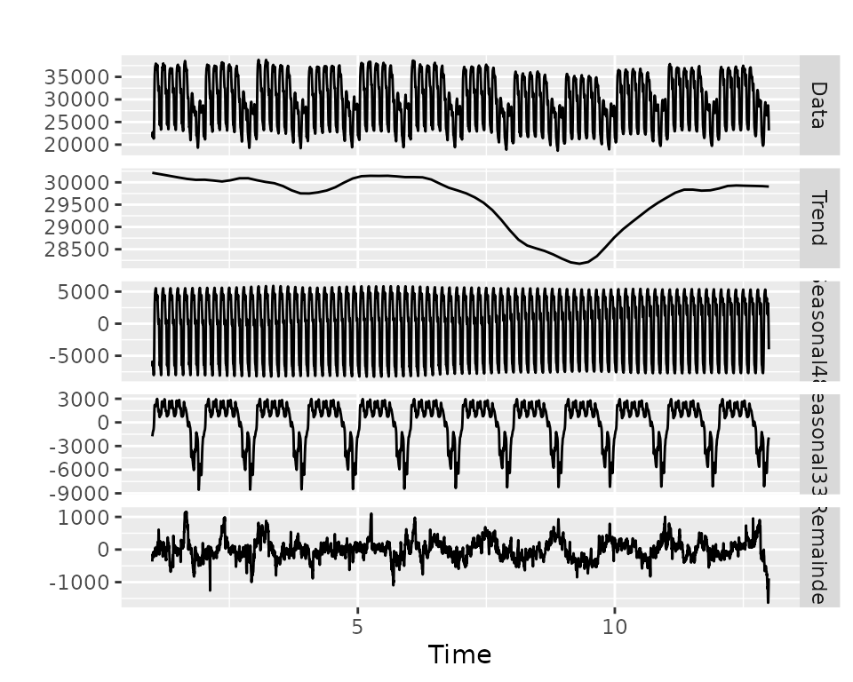
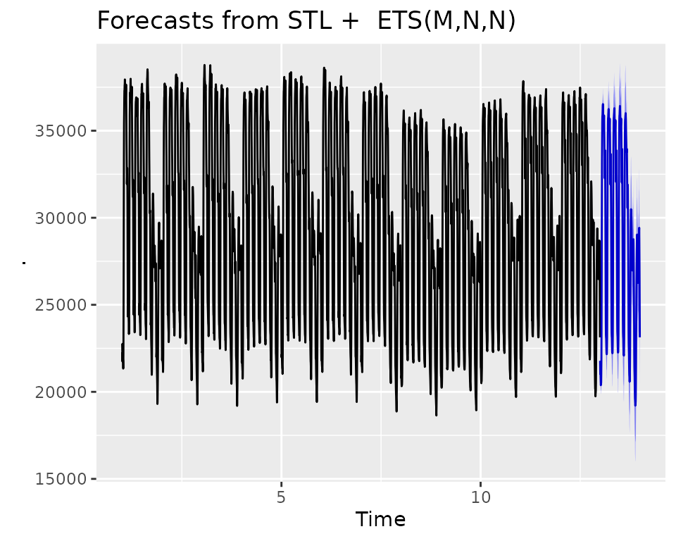
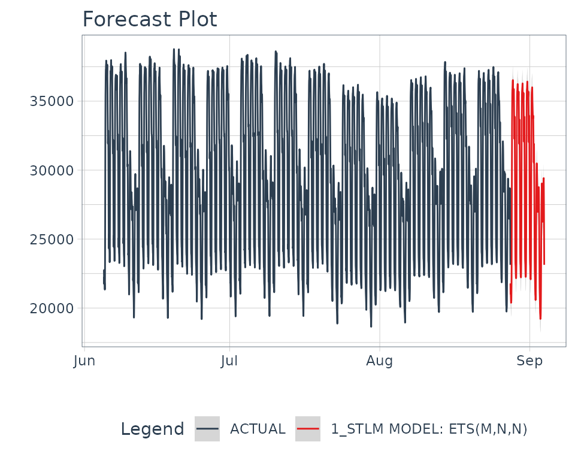

Extending Modeltime (Developer Tools)
Source:vignettes/extending-modeltime.Rmd
extending-modeltime.RmdIntroduction
The modeltime package was with extensibility in mind.
It’s impossible to incorporate the entire R time series
ecosystem into a single package. More than likely your going to need
something that hasn’t been included yet. And, if you’re a developer,
I challenge you to extend
modeltime to suit your needs. I’ve spent a lot of time
thinking about:
- A systematic workflow that can be used for time series analysis
- A way to integrate time series into a best-in-class modeling framework
(i.e.
tidymodels)
And, I want you to leverage what has been built so you don’t have to recreate the wheel.
Before we get started, where are we coming from?
Beyond being an amazing ecosystem for Machine Learning
analysis in R, tidymodels is a
developer-friendly infrastructure that enables
parsnip-adjacent packages like modeltime. The
ecosystem provides basic building blocks for extending machine learning
models, tuning parameters, performance metrics, and preprocessing
(feature engineering) tools. Before you start building, I highly
recommend reviewing these resources:
- Parsnip Models (Algorithms): How to build a parsnip model
- Dials Parameters (Tuning): How to create a tuning parameter function
- Yardstick Metrics (Performance): Custom performance metrics
- Recipes Step Functions (preprocessing): Create your own recipe step function
The most important is the first resource - “How to build a parsnip model”.
Example
Integrating Multiple Seasonal
Decomposition
The forecast package includes the stlm()
function for creating models using time series
decomposition. It’s a great approach based on the concept that you
can decompose complex seasonality into multiple components:
- Trend
- One or Multiple Seasonalities
- Remainder
We can then forecast the components using models like:
auto.arima() and ets().
Note - I’ve added a seasonal_reg() function that
includes the functionality we are about to create. Check that function
out to see more about seasonal decomposition methods.
Data
We’ll use taylor_30_min data from the
timetk package, which is electricity demand data at a
30-minute interval.
taylor_30_min %>%
plot_time_series(date, value, .interactive = FALSE)
STLM Model - A quick overview
We need to use 2 functions to create the model:
-
msts()- Tracks the multiple-seasonality as an object -
stlm()- Creates a model from themstsobject.
Note that we use seasonal periods (24*2 = 48) for daily
seasonality because this series has been aggregated at a 30-minute
interval. The second seasonality is at 7-days, so we just use
24*2*7.
stlm_model <- taylor_30_min %>%
pull(value) %>%
msts(seasonal.periods = c(24*2, 24*2*7)) %>%
stlm()
stlm_model$stl %>% autoplot()
The forecast() function is used to generate predictions,
much like the predict() function.

Looks like it’s doing a pretty decent job of forecasting the Taylor 30-Min Data.
How to build a modeltime model
The first step we need to do is to think about the function. We can create:
-
msts(): Creates a multiple time series object. Key arguments:seasonal.periods. -
stlm(): Creates the Multiple STL Model. Key arguments:-
method: Eitheretsorarima(actually usesauto.arima) - We’ll handle this by creating a specific engine called “stlm_ets”
for the
etsversion.
-
We could add others, but let’s keep it simple for now.
The General Process
We follow a very similar process to “How to build a parsnip model” with a few additional aspects:
- We create a “Modeltime Bridge” function to bridge
between
parsnipapi functions andforecasttime series. - We handle feature preprocessing internally to the model bridge to avoid the issue of losing dates and date-time information.
Step 1: Register the Model, Modes, and Arguments
Let’s add a new model called decomposition_reg() for
Regression by Decomposition. Because Time Series analysis is generally
regression, we’ll just register the regression mode.
set_new_model("decomposition_reg")
set_model_mode(model = "decomposition_reg", mode = "regression")
set_model_engine(model = "decomposition_reg", mode = "regression", eng = "stlm_ets")
# Here we set the dependency to forecast, though we can also use
# your package if you import the lower level package
set_dependency(model = "decomposition_reg", eng = "stlm_ets", pkg = "forecast")We can use show_model_info() to see what’s been added to
the registered model.
show_model_info("decomposition_reg")
#> Information for `decomposition_reg`
#> modes: unknown, regression
#>
#> engines:
#> regression: stlm_etsNA
#>
#>
#> no registered arguments.
#>
#> no registered fit modules.
#>
#> no registered prediction modules.We need to add model arguments as well. We’ll use
set_model_args() to add the appropriate model
arguments.
# 1st Frequency (period_seasonal_1 is a non-jargony term)
set_model_arg(
model = "decomposition_reg",
eng = "stlm_ets",
parsnip = "period_seasonal_1",
original = "period_seasonal_1",
func = list(pkg = "foo", fun = "bar"),
has_submodel = FALSE
)
# 2nd Frequency (period_seasonal_2 is a non-jargony term)
set_model_arg(
model = "decomposition_reg",
eng = "stlm_ets",
parsnip = "period_seasonal_2",
original = "period_seasonal_2",
func = list(pkg = "foo", fun = "bar"),
has_submodel = FALSE
)Important note: We are going to map these
“modeltime” arguments to a lower-level bridge function, so we don’t need
original = seasonal.periods. In fact, we can’t do this
because you need to have a one-to-one relationship between your
parsnip/modeltime model arguments and the lower-level modeling
function.
Step 2: Create the model function
We’ll create a decomposition_reg() function that will be
our core parsnip function.
decomposition_reg <- function(mode = "regression",
period_seasonal_1 = NULL,
period_seasonal_2 = NULL) {
args <- list(
period_seasonal_1 = rlang::enquo(period_seasonal_1),
period_seasonal_2 = rlang::enquo(period_seasonal_2)
)
parsnip::new_model_spec(
"decomposition_reg",
args = args,
eng_args = NULL,
mode = mode,
method = NULL,
engine = NULL
)
}Step 3: Add a Fit Bridge & Module
For Time Series models, we need to do extra work to get them to fit
the parsnip mold. The easiest way is to create a
“Bridge” function that helps process the data and
connect the arguments with the underlying time series package.
Step 3A: Create the Fit Bridge
Time Series Developer Tools come included with
modeltime:
-
Bridge Constructor:
new_modeltime_bridge(), A constructor for creatingmodeltimebridges that provide the connection between time series models and theparsnipinfrastructure. -
Xreg Preprocessing Tools:
create_xreg_recipe(),juice_xreg_recipe(), andbake_xreg_recipe() -
Date and Date-Time Parsing Tools:
parse_index_from_data(),parse_period_from_index()
Here’s a sample bridge function. It:
- Handles the data inputs,
x(data.frame of predictors) andy(vector, target) - Handles the timestamp data (index) - This column is parsed from
x - Handles the Predictors - formatting as necessary. The
ets()model is univariate, so no predictors are necessary to be transformed.
- Handles Fitting the model
- Creates a new model bridge using the constructor,
new_modeltime_bridge()
bridge_stlm_ets_fit_impl <- function(x, y, period_seasonal_1 = NULL, period_seasonal_2 = NULL, ...) {
outcome <- y # Comes in as a vector
predictors <- x # Comes in as a data.frame (dates and possible xregs)
# 1. Create outcome msts object by mapping `period_seasonal` args to msts()
if (is.null(period_seasonal_1) || period_seasonal_1 <= 1) {
stop("'period_seasonal_1' must be greater than 1 to assess seasonality")
} else if (is.null(period_seasonal_2) || period_seasonal_2 <= 1) {
seasonal.periods <- period_seasonal_1
} else {
seasonal.periods <- c(period_seasonal_1, period_seasonal_2)
}
outcome_msts <- forecast::msts(outcome, seasonal.periods = seasonal.periods)
# 2. Predictors - Handle Dates
index_tbl <- parse_index_from_data(predictors)
idx_col <- names(index_tbl)
idx <- timetk::tk_index(index_tbl)
# 3. Predictors - Handle Xregs
# NOT REQUIRED - ETS is univariate
# REQUIRED FOR ARIMA - ARIMA can accept XRegs
# xreg_recipe <- create_xreg_recipe(predictor, prepare = TRUE)
# xreg_matrix <- juice_xreg_recipe(xreg_recipe, format = "matrix")
# 4. Fitting
model_1 <- forecast::stlm(y = outcome_msts, method = "ets", ...)
# 5. New Modeltime Bridge
new_modeltime_bridge(
class = "bridge_stlm_ets_fit_impl",
models = list(model_1 = model_1),
data = tibble(
idx_col := idx,
.actual = y,
.fitted = model_1$fitted,
.residuals = model_1$residuals
),
extras = list(NULL), # Can add xreg preprocessors here
desc = str_c("STLM Model: ", model_1$model$method)
)
}We’ll make a quick print method so we don’t get crazy output.
print.bridge_stlm_ets_fit_impl <- function(x, ...) {
model <- x$models$model_1$model
cat(x$desc)
cat("\n")
print(model$call)
cat("\n")
print(
tibble(
aic = model$aic,
bic = model$bic,
aicc = model$aicc,
loglik = model$loglik,
mse = model$mse
)
)
invisible(x)
}Let’s make sure our bridge works.
stlm_test <- bridge_stlm_ets_fit_impl(
x = taylor_30_min[,"date"],
y = taylor_30_min %>% pull(value),
period_seasonal_1 = 24*2,
period_seasonal_2 = 24*2*7
)
stlm_test
#> STLM Model: ETS(M,N,N)
#> ets(y = x, model = etsmodel, allow.multiplicative.trend = allow.multiplicative.trend)
#>
#> # A tibble: 1 × 5
#> aic bic aicc loglik mse
#> <dbl> <dbl> <dbl> <dbl> <dbl>
#> 1 70395. 70414. 70395. -35194. 9501.The bridge looks good.
Step 3B: Create a Fit Module
Next, let’s hook up our parsnip fit module to the newly
created bridge fit function.
set_fit(
model = "decomposition_reg",
eng = "stlm_ets",
mode = "regression",
value = list(
interface = "data.frame",
protect = c("x", "y"),
func = c(fun = "bridge_stlm_ets_fit_impl"),
defaults = list()
)
)
show_model_info("decomposition_reg")
#> Information for `decomposition_reg`
#> modes: unknown, regression
#>
#> engines:
#> regression: stlm_ets
#>
#>
#> arguments:
#> stlm_ets:
#> period_seasonal_1 --> period_seasonal_1
#> period_seasonal_2 --> period_seasonal_2
#>
#> fit modules:
#> engine mode
#> stlm_ets regression
#>
#> no registered prediction modules.Step 4: Add a Prediction Bridge & Module
Next, we have an additional step to bridge the prediction. We create
a predict method that handles the new_data, treating the
number of rows as the forecasting horizon.
Step 4A: Create a Prediction Bridge
predict.bridge_stlm_ets_fit_impl <- function(object, new_data, ...) {
# PREPARE INPUTS
model <- object$models$model_1
h_horizon <- nrow(new_data)
# XREG
# NOT REQUIRED FOR ETS.
# xreg_recipe <- object$extras$xreg_recipe
# xreg_matrix <- bake_xreg_recipe(xreg_recipe, new_data, format = "matrix")
# PREDICTIONS
preds_forecast <- forecast::forecast(model, h = h_horizon)
# Return predictions as numeric vector
preds <- as.numeric(preds_forecast$mean)
return(preds)
}Let’s test the predict() method out. To help, I’ll
leverage future_frame() to predict the next 3-hours worth
of forecast points.
Excellent. We have predictions!
Step 4B: Add Modules for Prediction
We’re now ready to register the prediction function we’ve created.
set_pred(
model = "decomposition_reg",
eng = "stlm_ets",
mode = "regression",
type = "numeric",
value = list(pre = NULL,
post = NULL,
func = c(fun = "predict"),
args = list(object = rlang::expr(object$fit),
new_data = rlang::expr(new_data))
)
)
show_model_info("decomposition_reg")
#> Information for `decomposition_reg`
#> modes: unknown, regression
#>
#> engines:
#> regression: stlm_ets
#>
#>
#> arguments:
#> stlm_ets:
#> period_seasonal_1 --> period_seasonal_1
#> period_seasonal_2 --> period_seasonal_2
#>
#> fit modules:
#> engine mode
#> stlm_ets regression
#>
#> prediction modules:
#> mode engine methods
#> regression stlm_ets numericStep 5: Add Encoding
We need to modify how parnsip handles features because
date and date-time information cannot be processed by
model.frame() (default behavior). We use
set_encoding() to ensure the predictors are processed
without any preprocessing. We’ll handle all preprocessing in our fit
model bridge, bridge_stlm_ets_fit_impl() (shown next).
parsnip::set_encoding(
model = "decomposition_reg",
eng = "stlm_ets",
mode = "regression",
options = list(
predictor_indicators = "none",
compute_intercept = FALSE,
remove_intercept = FALSE,
allow_sparse_x = FALSE
)
)Does it work?
The moment of truth is upon us! Let’s test this new
modeltime function out.
Make the Fitted STL Decomposition Model
We’ll split the data into training and test sets.
splits <- initial_time_split(taylor_30_min, prop = 0.9)Then create a model on the training set.
model_fit <- decomposition_reg(
period_seasonal_1 = 24*2,
period_seasonal_2 = 24*2*7
) %>%
set_engine("stlm_ets") %>%
fit(value ~ date, data = training(splits))
model_fit
#> parsnip model object
#>
#> STLM Model: ETS(M,N,N)
#> ets(y = x, model = etsmodel, allow.multiplicative.trend = allow.multiplicative.trend)
#>
#> # A tibble: 1 × 5
#> aic bic aicc loglik mse
#> <dbl> <dbl> <dbl> <dbl> <dbl>
#> 1 63052. 63071. 63052. -31523. 9747.Make a Calibrated Modeltime Table
Next, let’s calibrate the fitted model.
calibration_tbl <- model_fit %>%
modeltime_table() %>%
modeltime_calibrate(new_data = testing(splits))
calibration_tbl
#> # Modeltime Table
#> # A tibble: 1 × 5
#> .model_id .model .model_desc .type .calibration_data
#> <int> <list> <chr> <chr> <list>
#> 1 1 <fit[+]> STLM MODEL: ETS(M,N,N) Test <tibble [404 × 4]>Refit on the Full Dataset
We’ll refit on the full dataset.
refit_tbl <- calibration_tbl %>%
modeltime_refit(data = taylor_30_min)Then forecast forward 1 week.
refit_tbl %>%
modeltime_forecast(h = "1 week", actual_data = taylor_30_min) %>%
plot_modeltime_forecast(.interactive = FALSE)
And now you’ve just created a new model. Just wrap it up in a package
and you’ve extended parsnip and modeltime.
Congrats!